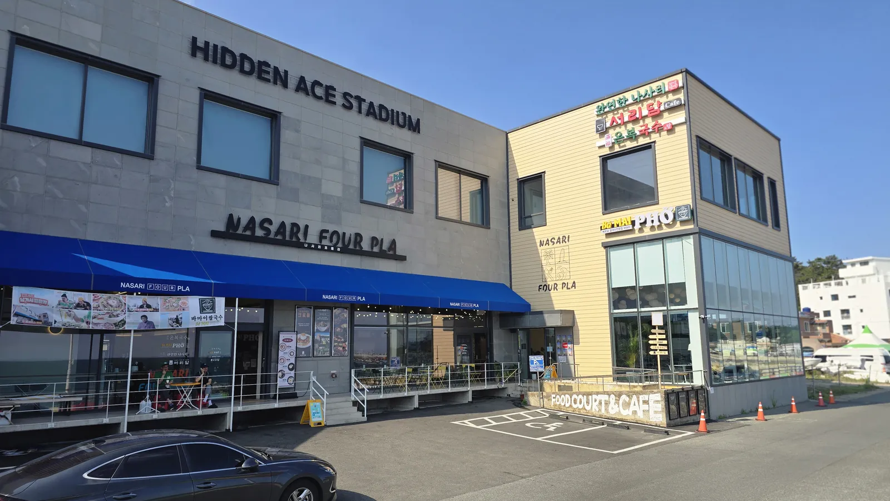
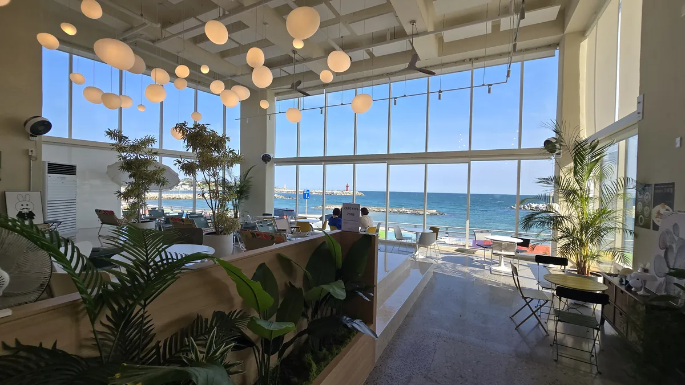
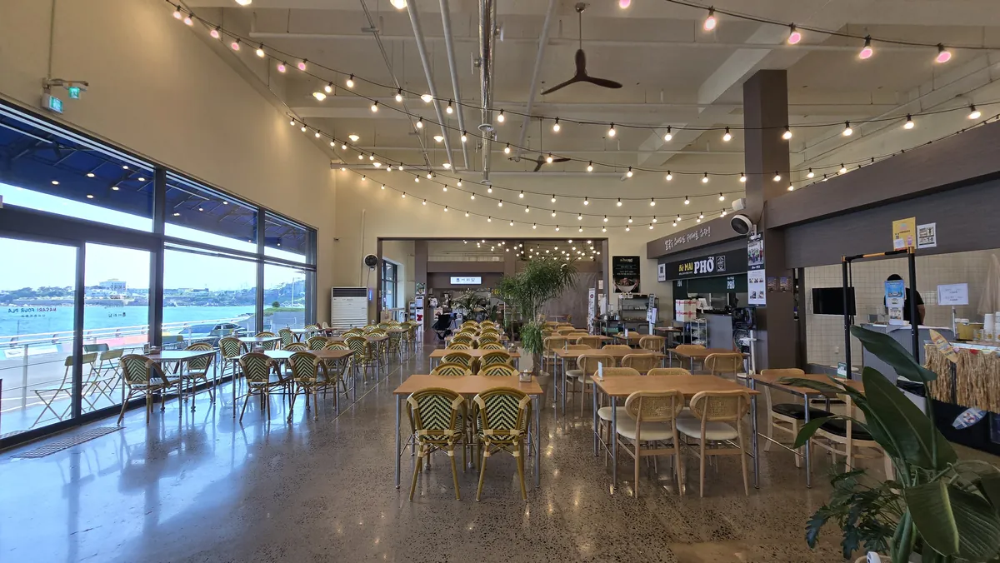
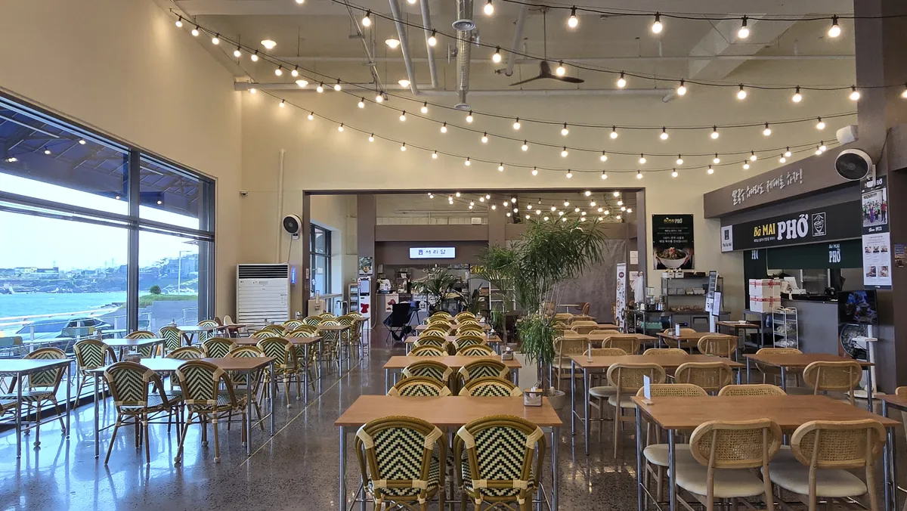
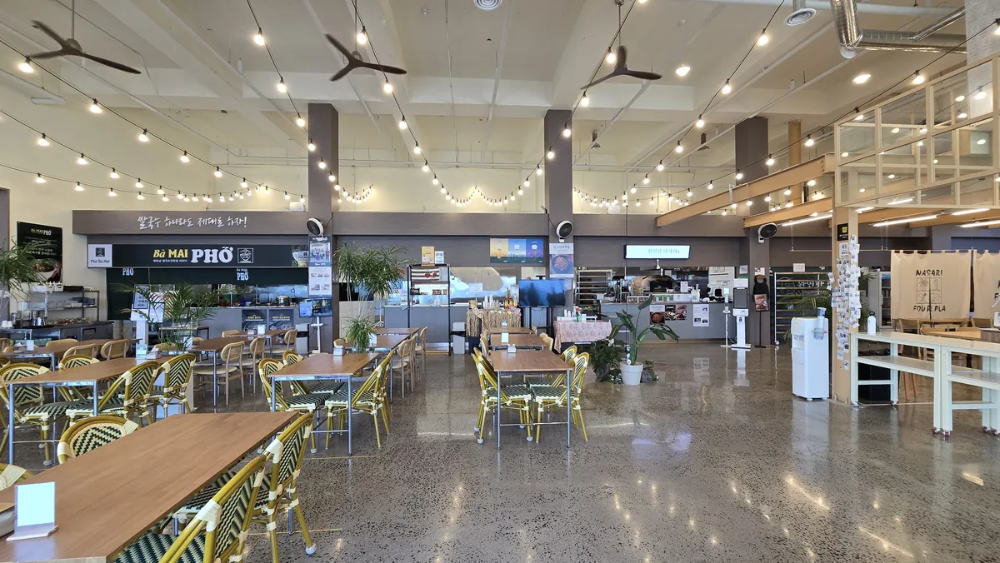
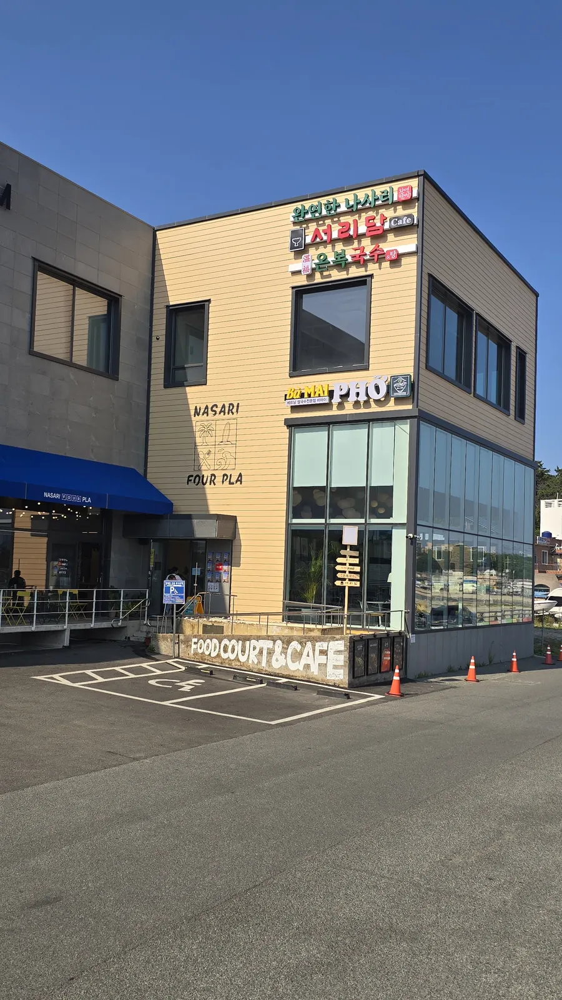

Concept
오션뷰 복합 외식공간
관광지 단일 매장의 한계를 넘어, 한 동에 서로 다른 업종을 모았습니다. 취향이 갈리는 가족·동행 손님 전체가 한 건물에서 머무는 구조입니다.
01
한 동, 4업종
한식·쌀국수·카페·국수. 취향이 다른 일행도 같은 건물 안에서 각자 원하는 한 끼를 고릅니다.
02
1테이블 컨셉
주문은 매장별, 자리는 함께. 그룹 단위 손님 전체를 놓치지 않는 통합 좌석 운영.
03
간절곶 5분
해안 드라이브 코스의 중간 정차지. 해가 가장 먼저 뜨는 곶, 그 관광 동선 위의 입지 프리미엄.
4 Stores
네 개의 맛, 하나의 바다
각 매장의 컨셉과 메뉴, 운영시간은 상세 페이지에서 확인하세요.
Space
통창 너머, 동해
펜던트 조명 아래 오션뷰 좌석과 네 매장이 모인 홀. 자리마다 바다가 걸립니다.





Ganjeolgot Course
일출 보고, 바다 한 끼
해가 가장 먼저 뜨는 간절곶과 나사리해수욕장 사이, 나사리 포플라를 중심에 둔 반나절 코스를 제안합니다.
Sunrise
간절곶 일출·등대
한반도에서 해가 가장 먼저 뜨는 곶. 소망우체통과 등대를 배경으로 하루를 엽니다. 차로 5분 거리.
Walk
나사리해수욕장 산책
완만한 백사장을 따라 걷는 아침 바다. 나사리 포플라 바로 앞, 걸어서 닿는 해변입니다.
Meal · Coffee
나사리 포플라에서 한 끼
화덕 생선구이 정식부터 쌀국수, 국수, 오션뷰 커피까지. 취향대로 골라 한 테이블에서 함께.
Drive
서생포왜성·해안 드라이브
차로 10분, 서생포왜성 전망과 이어지는 31번 국도 해안 드라이브로 여정을 마무리합니다.
※ 매장별 영업시간은 각 매장 상세 페이지에서 확인해 주세요.